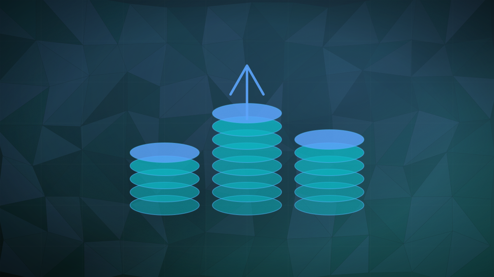

Memory
SK Hynix will buy back and cancel $28.6bn of its own shares on the AI memory boom
The 40 trillion won programme is the largest treasury share cancellation by a listed South Korean company, covering about 3.3% of shares outstanding.

Original cover art, generated for this story. THE VISSION does not republish third-party press imagery.
The short version
- SK Hynix approved a plan to repurchase and cancel 40 trillion won ($28.6 billion) of its own shares, the largest such cancellation by a listed South Korean company.
- The buyback covers roughly 24.07 million shares, about 3.3% of shares outstanding, and runs from August 20 to November 19.
- SK Hynix also said it will raise its 2025-2027 shareholder return commitment from a ceiling of 50% of cumulative free cash flow to a floor above that level.
- The company said it believes the market is undervaluing the stock, after investor pressure on both it and Samsung to return more of the cash generated by AI memory demand.
The 40 trillion won programme is the largest treasury share cancellation by a listed South Korean company, covering about 3.3% of shares outstanding.